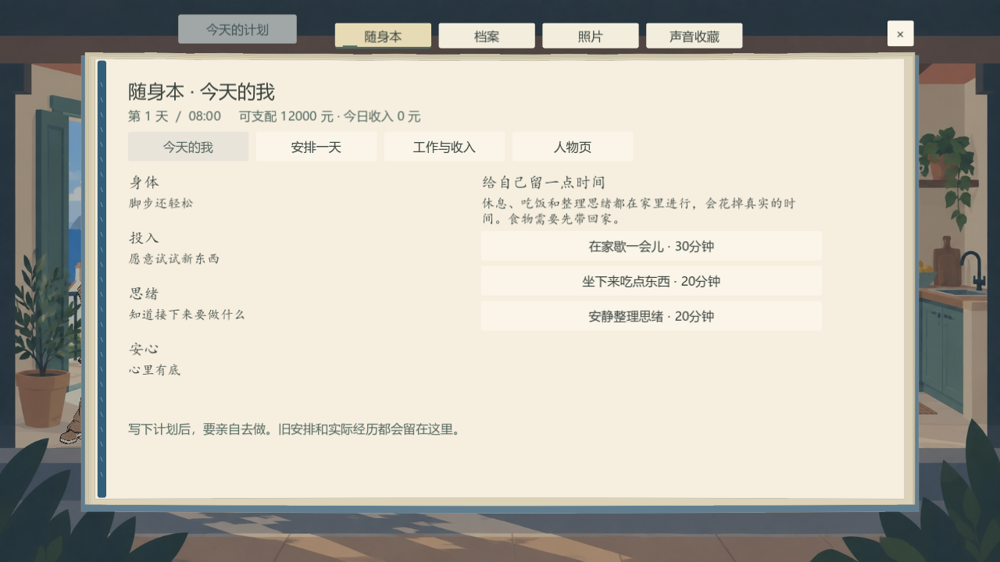

状态、日程、出行和工作结算已进入实际游戏。四项状态留在随身本里，用身体和心情的文字反馈；保留原有小镇、背景和人物素材。

进入游戏后点顶部「今天的计划」，或按 J →「今天的我」。长活动需要先留出连续空档；写进日程不会自动完成。「按记下的交通方式出发」会核对真实路线、车费和到达时间。
固定班次必须亲手做饭出餐后领工资，早退按实际时段折算。人物页通过具体观察、知情回应和后续见面留下认识，重复聊天不会刷出签名。
这是实际界面与操作说明页。游戏在同目录交付的 Solmere.exe 中运行。